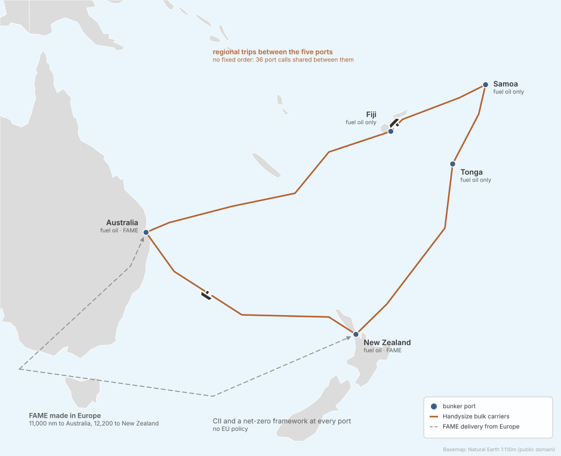
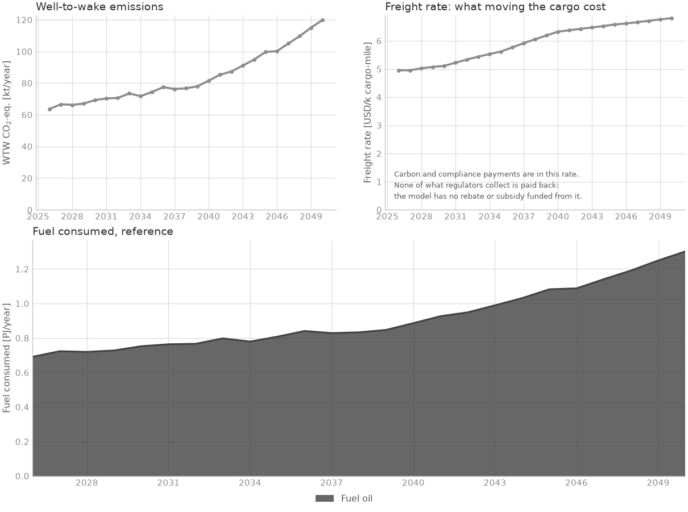

Island trade in the South Pacific#
Regional networks · deck simulations/examples/example_2/

Can a regional bulk trade switch to biodiesel when only its main ports supply it?
The case#

Ships: 6 Handysize bulk carriers (~26,000 DWT), all on fuel oil, the same design throughout: the oil engine can burn biodiesel (FAME) instead. The owners can fit seven efficiency measures.
Route: regional trips between Australia, New Zealand, Fiji, Samoa and Tonga, with no fixed order of calls. Trade grows 5 % a year.
Fuels: fuel oil at every port; FAME made from used cooking oil in Europe, shipped 11,000 to 12,200 nm, and bunkered in Australia and New Zealand only.
Policy: CII and a net-zero framework on every port, the framework with values that are the deck’s own, not the data library’s. No EU policy.
Horizon: 2026 to 2050, yearly.
Results#

No FAME is bunkered at any point: fuel oil stays cheaper under these rules, and emissions grow with trade, from 64 to 120 kt CO2e a year.
The deck#
# SPDX-FileCopyrightText: 2026 Fonden Mærsk Mc-Kinney Møller Center for Zero Carbon Shipping
# SPDX-License-Identifier: CC-BY-4.0
# ---------------------------------------------------------------------------------
#
# SETTING THE SCENE – EXAMPLE 2 (PACIFIC BULK TRADE WITH FAME)
#
# A regional bulk carrier operator based in Australia and New Zealand operates
# a small fleet of Handysize bulk carriers trading across the South
# Pacific (Australia, New Zealand, Fiji, Samoa, and Tonga).
#
# The fleet is modeled with a single vessel specification, which can operate
# on either fossil marine fuels or renewable alternatives such as
# B100-grade FAME. FAME is assumed to be produced from waste oils under
# recognized sustainability schemes, with supply available at the main ports
# in Australia and New Zealand. Smaller island ports are assumed to provide
# only fossil fuels, requiring planning of bunkering logistics.
#
# EU regulatory measures are excluded. Only international/IMO frameworks are
# considered (e.g., CII and potential IMO market-based measures).
#
# This scenario provides a reference case for assessing the costs and emission
# impacts of adopting FAME in Pacific regional bulk trades. Users can adjust
# fleet size, routing, fuel availability, costs, emission factors, and
# regulatory assumptions in the .inc files to explore sensitivities and
# alternative policy outcomes.
#
# ---------------------------------------------------------------------------------
DEFINE {
# -------------------------- DEFINITIONS --------------------------
# Import the default model settings. These provide baseline constants
# and parameters that can be overwritten in this scenario.
Load DefaultModelDefinition
# ---------------------- BUNKER LOGISTICS -------------------------
# Defines the cost and handling assumptions for transporting and supplying
# fuels. This is particularly relevant as FAME is produced in Europe and
# shipped to the South Pacific, while fossil fuels are treated as widely
# available regionally.
Include "includes/bunker_logistics.inc"
# ---------------------------- FLEET ------------------------------
# Defines the vessel type used, size, age structure, and initial uptake
# of the operator’s fleet. This section also includes optional energy
# efficiency measures.
Include "includes/fleet_curves.inc"
Include "includes/fleet.inc"
Include "includes/energy_efficiencies_curves.inc"
Include "includes/energy_efficiencies.inc"
# ----------------------------- ROUTE -----------------------------
# Defines the ports included in the example (Australia, New Zealand, and
# selected Pacific island ports) along with their characteristics. The
# route file specifies the distribution of voyages, port calls, and
# time allocation between sea and port conditions.
Include "includes/route.inc"
Include "includes/ports.inc"
# ----------------------------- FUEL ------------------------------
# Defines the fuels available in the example, their production processes,
# feedstocks, costs, and emission factors. Regional differences and
# producer-specific constraints (e.g. feedstock limits) are also captured
# here.
Include "includes/fuel_production.inc"
Include "includes/regions.inc"
Include "includes/producer.inc"
Load DefaultEmission
# -------------------------- REGULATION ---------------------------
# Defines the relevant international regulatory frameworks affecting the
# fleet, such as IMO’s CII, long-term net-zero pathways, and related
# measures. EU-specific policies are excluded in this Pacific scenario.
Include "includes/cii.inc"
Include "includes/net_zero_framework.inc"
# ----------------------- DECISION PROCESESS --------------------
Include "includes/decision_processes.inc"
# -------------------------- OUTPUT -----------------------------
Load DefaultPlot
}
EVENTS {
# time-steps
Load DefaultTimeStepYearly
}
# SPDX-FileCopyrightText: 2026 Fonden Mærsk Mc-Kinney Møller Center for Zero Carbon Shipping
# SPDX-License-Identifier: CC-BY-4.0
# ------------------------------ FLEET ---------------------------------------
#
# This file defines the bulk carrier fleet used in the Pacific regional scenario.
# The fleet consists of Handysize vessels trading between Australia,
# New Zealand, and small island ports (Fiji, Samoa, Tonga).
#
# For simplicity, vessel specifications (capacity, load levels, capital and
# operating costs) are assumed to be the same regardless of whether they run
# on fuel oil or FAME. Differences in fuel type, emissions, and costs are captured
# through the fuel production, bunker logistics and regulation definition
#
# The vessels are of different ages, and you can change the initital number, the
# level of trade growth or allowance of speed management to see how it affects
# the output.
#
# -----------------------------------------------------------------------------
Copy Vessel "bulk_carrier_26k_dwt_ice_oil" "bulk_carrier_handysize_oil"
Fleet "bulk_carrier_handysize" {
# vessel types
Vessels = [Vessel("bulk_carrier_handysize_oil")]
# initial conditions
InitialVessels = 6
InitialSplit = [1.]
InitialAgeDistribution = [
Curve("age_dist_bulk_carrier_handysize_oil")
]
# Trade growth: annual growth rate of 5%, but can be changed if expected otherwise or disabled to keep constant.
TradeGrowth = 0.05
# Speed management: enabled to allow adjustments in operational behavior
AllowSpeedManagement = TRUE
MaximumSpeedChange = 0.5
}
# SPDX-FileCopyrightText: 2026 Fonden Mærsk Mc-Kinney Møller Center for Zero Carbon Shipping
# SPDX-License-Identifier: CC-BY-4.0
# --------------------------- ENERGY EFFICIENCIES ---------------------------------------
#
# This section specifies the technical measures that can be applied to the
# Handysize bulk carrier fleet in the Pacific regional scenario. Because we
# only model one vessel type, all efficiency options are grouped here, allowing
# easy adjustment of uptake shares and technology combinations.
#
# Efficiencies include hull, propeller, and operational measures, as well as
# optional alternative power systems (e.g. Flettner rotors).
#
# Initial shares represent the baseline assumption, while the structure allows
# users to explore different adoption rates and combinations in sensitivity
# analyses.
#
# ---------------------------------------------------------------------------------------
Fleet "bulk_carrier_handysize" {
# technologies
Technologies = [
Technology("air_lubrication_bulk_carrier_handy"),
Technology("exhaust_gas_boiler_ae_bulk_carrier_handy"),
Technology("flettner_rotor_bulk_carrier_handy"),
Technology("hull_painting_bulk_carrier_handy"),
Technology("lighting_system_bulk_carrier_handy"),
Technology("propeller_improvement_devices_bulk_carrier_handy"),
Technology("variable_frequency_drive_bulk_carrier_handy")
]
set_initial_technology_share("*", "exhaust_gas_boiler_ae_bulk_carrier_handy", Curve("uptake_exhaust_gas_boiler_ae_bulk_carrier_handy"))
set_initial_technology_share("*", "hull_painting_bulk_carrier_handy", Curve("uptake_hull_painting_bulk_carrier_handy"))
set_initial_technology_share("*", "lighting_system_bulk_carrier_handy", Curve("uptake_lighting_system_bulk_carrier_handy"))
set_initial_technology_share("*", "propeller_improvement_devices_bulk_carrier_handy", Curve("uptake_propeller_improvement_devices_bulk_carrier_handy"))
set_initial_technology_share("*", "variable_frequency_drive_bulk_carrier_handy", Curve("uptake_variable_frequency_drive_bulk_carrier_handy"))
}
# SPDX-FileCopyrightText: 2026 Fonden Mærsk Mc-Kinney Møller Center for Zero Carbon Shipping
# SPDX-License-Identifier: CC-BY-4.0
# Curve definitions for initial age distributions and technology shares
Curve "age_dist_bulk_carrier_handysize_oil" {
Table = [
0 0
1 0
2 0
3 0.167
4 0
5 0
6 0
7 0
8 0
9 0
10 0
11 0.167
12 0
13 0
14 0
15 0.167
16 0.167
17 0.167
18 0
19 0
20 0
21 0.167
22 0
23 0
24 0
]
}
# SPDX-FileCopyrightText: 2026 Fonden Mærsk Mc-Kinney Møller Center for Zero Carbon Shipping
# SPDX-License-Identifier: CC-BY-4.0
# Curve definitions for initial technology uptake
Curve "uptake_exhaust_gas_boiler_ae_bulk_carrier_handy" {
Table = [
0 0.125
30 0.125
]
}
Curve "uptake_hull_painting_bulk_carrier_handy" {
Table = [
0 0.1
30 0.1
]
}
Curve "uptake_lighting_system_bulk_carrier_handy" {
Table = [
0 0.5
30 0.5
]
}
Curve "uptake_propeller_improvement_devices_bulk_carrier_handy" {
Table = [
0 0.25
30 0.25
]
}
Curve "uptake_variable_frequency_drive_bulk_carrier_handy" {
Table = [
0 0.25
30 0.25
]
}
# SPDX-FileCopyrightText: 2026 Fonden Mærsk Mc-Kinney Møller Center for Zero Carbon Shipping
# SPDX-License-Identifier: CC-BY-4.0
# ------------------------------ ROUTE -------------------------------------------
#
# This file defines the transport routes in the example, representing
# regional bulk trade across the South Pacific. The network connects
# the main hubs (Australia and New Zealand) with island ports (Fiji,
# Samoa, and Tonga). This is a tramp route and thus the ports are not
# visited in any particular order.
#
# --------------------------------------------------------------------------------
Vessel "bulk_carrier_handysize_oil" {
Route = Route("pacific_trade")
}
Route "pacific_trade" {
RouteType = REGIONAL_TRIP
Ports = Port("*") # there are five ports, number of port calls must match
PortCalls = [11, 9, 8, 4, 4] # 36 in total according to assumptions
TimeAtSea = 0.47
Speeds = [13.0, 12.5, 12.0, 11.8, 12.2]
ConditionDistribution = [0.26, 0.21, 0.18, 0.17, 0.18]
}
# SPDX-FileCopyrightText: 2026 Fonden Mærsk Mc-Kinney Møller Center for Zero Carbon Shipping
# SPDX-License-Identifier: CC-BY-4.0
# ---------------------------- PORTS --------------------------------------------------
#
# This file defines the simplified set of ports used in the example: Australia,
# New Zealand, Fiji, Samoa, and Tonga.
#
# Australia and New Zealand act as regional hubs with full fuel supply, including
# both fossil fuel oils and FAME biofuel. Fiji, Samoa, and Tonga represent
# smaller island ports with more limited bunkering options, where only fossil fuels
# are assumed to be available.
#
# -------------------------------------------------------------------------------------
Port "australia" {
set_bunkering_allowed("fatty_acid_methyl_ester", TRUE)
}
Port "new_zealand" {
set_bunkering_allowed("fatty_acid_methyl_ester", TRUE)
}
Port "fiji" {
set_bunkering_allowed("fatty_acid_methyl_ester", FALSE)
}
Port "samoa" {
set_bunkering_allowed("fatty_acid_methyl_ester", FALSE)
}
Port "tonga" {
set_bunkering_allowed("fatty_acid_methyl_ester", FALSE)
}
Port "*" {
set_bunkering_allowed("fossil_fuel_oil", TRUE)
# Here we define the price and WTT of fossil fuel oil as we don't calculate it bottom up.
set_bunker_price_overwrite("fossil_fuel_oil", Forecast("fossil_fuel_oil_price_global"))
set_bunker_wtt_overwrite("fossil_fuel_oil", "carbon_dioxide", Forecast("fossil_fuel_oil_wtt_carbon_dioxide"))
set_handling_cost("fossil_fuel_oil", Variable("handling_cost_oil"))
set_handling_cost("fatty_acid_methyl_ester", Variable("handling_cost_fame"))
}
# Here you can change the handling cost of oil and fame
Variable "handling_cost_oil" {
Value = 8
}
Variable "handling_cost_fame" {
Value = 18
}
# SPDX-FileCopyrightText: 2026 Fonden Mærsk Mc-Kinney Møller Center for Zero Carbon Shipping
# SPDX-License-Identifier: CC-BY-4.0
# ---------------------- BUNKER LOGISTICS -------------------------------------
#
# This file defines the assumptions related to marine fuel supply and delivery
# across the ports used in the example.
#
# Fossil fuel oil is treated as a liquid market fuel — widely
# available with mature infrastructure and low delivery uncertainty.
#
# For alternative fuels like FAME, supply availability and costs differ by port,
# but no special bunkering infrastructure is assumed beyond standard marine
# fuel handling. Cost differentials mainly reflect fuel production and regional
# supply conditions.
#
# For fossil fuel oil there are no related transport cost, while for FAME,
# the transportation from Europe to the ports in Australia and New Zealands
# adds a cost.
#
# ----------------------------------------------------------------------------
BunkerLogistics {
LiquidMarketFuels = [Fuel("fossil_fuel_oil")]
set_distance("europe", "australia", 11000)
set_distance("europe", "new_zealand", 12200)
set_transport_cost("*", 0.01)
}
# SPDX-FileCopyrightText: 2026 Fonden Mærsk Mc-Kinney Møller Center for Zero Carbon Shipping
# SPDX-License-Identifier: CC-BY-4.0
# ---------------------------------- FUEL PRODUCTION --------------------------------------
#
# This file defines the fuels available in the Pacific regional bulk trade example.
# It includes both conventional fossil fuel oil and a bio-fuel alternative (FAME),
# along with their associated production plants, processes, and feedstocks.
#
# Regional supply and producer definitions are specified separately in producer.inc
# and regions.inc. FAME production is assumed to take place in Europe and transported
# to Australia and New Zealand, with fossil fuels treated as globally available.
#
# ----------------------------------------------------------------------------------------
# FUEL OIL
# Conventional fossil marine fuel widely available in the region
Import Fuel "fossil_fuel_oil"
# FAME
# Renewable biodiesel (Fatty Acid Methyl Ester) produced from waste oils and fats
Import Fuel "fatty_acid_methyl_ester"
# FAME production plant located in Europe, but has to be transported to AU/NZ
Import Plant "plant_fatty_acid_methyl_ester"
Plant "plant_fatty_acid_methyl_ester" {
Region = Region("europe")
Source = Source("grid")
# as default_plant.inc sets it for FAME in Europe; without it, 0 %
CostOfCapital = Forecast("cost_of_capital_plant_bio_europe")
}
# FAME synthesis process using multiple feedstocks
Import Process "fatty_acid_methyl_ester_synthesis"
Import Feedstock "used_cooking_oil"
Import Feedstock "methanol_grey"
Import Feedstock "demineralized_water"
# Electricity Source
# FAME production is assumed to draw electricity from the regional grid
Import Source "grid"
# SPDX-FileCopyrightText: 2026 Fonden Mærsk Mc-Kinney Møller Center for Zero Carbon Shipping
# SPDX-License-Identifier: CC-BY-4.0
# ------------------------------------ REGIONS -------------------------------------
#
# This file defines the geographic area of FAME production, Europe.
#
# The specific region plays a role in the upstream (WTT) part of the fuel supply chain,
# affecting the overall cost and environmental impact of fuel production and delivery.
#
# These regional settings are used to calculate the lifecycle emissions and cost differences
# for fuels such as FAME, depending on where they are produced and consumed.
#
# ----------------------------------------------------------------------------------
Region "europe" {
# set region specific source cost
set_source_opex("grid", Forecast("electricity_cost_europe_mid")) # renewable LCoE is used as a proxy as no alternative assumption is available
# set region specific grid emissions
set_source_wtt("grid", "carbon_dioxide", Forecast("grid_emissions_europe"))
}
Region "*" {
set_transport_cost("truck", 0.0)
set_transport_wtt("truck", "carbon_dioxide", Forecast("truck_emissions"))
# Feedstock cost and WTT for FAME production
set_feedstock_cost("demineralized_water", Forecast("demineralized_water_cost"))
set_feedstock_cost("used_cooking_oil", Forecast("used_cooking_oil_cost_europe"))
# Cost and emissions of the FAME synthesis
set_process_capex("fatty_acid_methyl_ester_synthesis", Forecast("fatty_acid_methyl_ester_synthesis_capex"))
set_process_opex("fatty_acid_methyl_ester_synthesis", Forecast("fatty_acid_methyl_ester_synthesis_opex"))
set_process_energy("fatty_acid_methyl_ester_synthesis", Forecast("fatty_acid_methyl_ester_synthesis_energy"))
set_process_wtt("fatty_acid_methyl_ester_synthesis", "carbon_dioxide", <-Variable("carbon_dioxide_per_fame") + Forecast("fame_wtt_carbon_dioxide")>)
set_process_wtt("fatty_acid_methyl_ester_synthesis", "methane", Forecast("fame_wtt_methane"))
set_process_wtt("fatty_acid_methyl_ester_synthesis", "nitrous_oxide", Forecast("fame_wtt_nitrous_oxide"))
}
Transport "truck" {
}
# SPDX-FileCopyrightText: 2026 Fonden Mærsk Mc-Kinney Møller Center for Zero Carbon Shipping
# SPDX-License-Identifier: CC-BY-4.0
# ------------------------------ PRODUCER ----------------------------------------------
#
# This block defines the FAME producer entity responsible for fuel supply. It is located
# in Europe. It links to a dedicated plant and is subject to regional feedstock constraints,
# which limit production scale and growth potential.
#
# -------------------------------------------------------------------------------------
Producer "producer_fame" {
Plants = [Plant("plant_fatty_acid_methyl_ester")]
MaximumDevelopment = 1
set_feed_constraint("used_cooking_oil", Forecast("used_cooking_oil_constraint"))
}
# This forecast is simply for a single European producer instead of on a global scale.
# These numbers can be changed if a lower/higher availability is expected.
Forecast "used_cooking_oil_constraint" {
Table = [
"01-01-2025" 2.80e4
"01-01-2030" 3.30e4
"01-01-2035" 3.70e4
"01-01-2040" 3.90e4
"01-01-2045" 4.10e4
"01-01-2050" 4.20e4
]
Extrapolate = LINEAR
}
# SPDX-FileCopyrightText: 2026 Fonden Mærsk Mc-Kinney Møller Center for Zero Carbon Shipping
# SPDX-License-Identifier: CC-BY-4.0
# ------------------ CARBON INTENSITY INDICATOR ---------------------------
#
# Tracks compliance of international container ships with IMO’s CII rule
# based on CO₂ per transport work (TTW). Used here for monitoring only,
# with no effect on decision-making (remedial cost = 0).
#
# -----------------------------------------------------------------------
Regulation "cii" {
Measure = TRANSPORT_NOMINAL
Scheme = INDIVIDUAL
Scope = TTW
IncludeSlip = FALSE
Emissions = Emission("carbon_dioxide")
Fuels = Fuel("*")
Jurisdiction = [Port("australia"), Port("new_zealand"), Port("fiji"), Port("samoa"), Port("tonga")]
# A remedial cost of zero means the regulation will have no influence on the decision making.
# The CII regulation is purely included to track the compliance with the regulation in the output.
RemedialCost = 0
# CII applies to all vessels in this scenario
set_include_vessel("*", TRUE)
# assign regulation specific emission factors according to MEPC308(73) for EEDI index
set_fuel_ttw("fossil_fuel_oil", "carbon_dioxide", 3.114) # based on HFO
set_fuel_ttw("fatty_acid_methyl_ester", "carbon_dioxide", 0.62) # 84% reduction relative to LSFO, based on EU regulation
set_vessel_threshold("bulk_carrier_handy*", Forecast("cii_target_bulk_carrier_handysize"))
}
Forecast "cii_target_reduction" {
Table = [
"01-01-2019" 1.0
"01-01-2020" 0.99
"01-01-2021" 0.98
"01-01-2022" 0.97
"01-01-2023" 0.95
"01-01-2024" 0.93
"01-01-2025" 0.91
"01-01-2026" 0.89
"01-01-2027" 0.87
"01-01-2028" 0.85
"01-01-2029" 0.83
"01-01-2030" 0.81
]
Extrapolate = FLAT
}
Copy Forecast "cii_target_reduction" "cii_target_bulk_carrier_handysize"
Forecast "cii_target_bulk_carrier_handysize" {
Multiplier = 7.08
}
# SPDX-FileCopyrightText: 2026 Fonden Mærsk Mc-Kinney Møller Center for Zero Carbon Shipping
# SPDX-License-Identifier: CC-BY-4.0
# -------------------------- NET ZERO FRAMEWORK REGULATIONS --------------------------
#
# Implements an interpretation of the IMO Net Zero Framework (January 2026).
# Defines a well-to-wake (WTW) emissions intensity pathway aligned with net-zero goals.
# Applies across fuels and vessel types, with adjustable scope, jurisdiction, and coverage.
#
# -------------------------------------------------------------------------------------
Regulation "net_zero_framework" {
Measure = INTENSITY
Scheme = FLEXIBLE
Scope = WTW
IncludeSlip = TRUE
Emissions = Emission("*")
Fuels = Fuel("*")
Jurisdiction = [Port("australia"), Port("new_zealand"), Port("fiji"), Port("samoa"), Port("tonga")]
RemedialCost = Forecast("net_zero_framework_remedial")
SharedThreshold = Forecast("net_zero_framework_z_values")
set_include_vessel("*", TRUE)
}
Forecast "net_zero_framework_z_values" {
Table = [
"01-01-2025" 1.00
"31-12-2027" 1.00
"01-01-2028" 0.96
"01-01-2029" 0.94
"01-01-2030" 0.92
"01-01-2031" 0.876
"01-01-2032" 0.832
"01-01-2033" 0.788
"01-01-2034" 0.744
"01-01-2035" 0.70
"01-01-2040" 0.35
"01-01-2050" 0.05
]
Multiplier = 93.3
Extrapolate = FLAT
}
# Here you can change the remedial cost to see what is required to justify the use of FAME
Forecast "net_zero_framework_remedial" {
Table = [
"01-01-2025" 0
"31-12-2027" 0
"01-01-2028" 380 # 500
]
Extrapolate = FLAT
}
# SPDX-FileCopyrightText: 2026 Fonden Mærsk Mc-Kinney Møller Center for Zero Carbon Shipping
# SPDX-License-Identifier: CC-BY-4.0
# --------------------------- DECISION PROCESSES ----------------------------------
#
# This file defines how quickly the fleet and producers can adopt new fuels or technologies
# over time. These settings act as behavioral levers, influencing the model’s flexibility
# in switching between fuels or retrofitting ships.
#
# -----------------------------------------------------------------------------------
Fleet "bulk_carrier_handysize" {
# Decision sensitivities for newbuilds (odds ratios)
InterFuelSensitivity = 0.5 # Between engine fuel types: a 10% higher LCOT halves the odds
IntraFuelSensitivity = 0.5 # Within a single engine fuel type
TechnologySensitivity = 2 # Energy efficiency: a 5%-of-CAPEX NPV advantage doubles the odds
}
Producer "producer_fame" {
# Decision sensitivities for split between plants
FuelDemandSensitivity = 1.25 # Between fuel pathways: a 10% higher expected demand gives 1.25x the odds
FuelCostSensitivity = 0.5 # Within a pathway: a 10% higher LCoF halves the odds
}
Build it with an AI assistant#
The prompt below rebuilds this deck exactly: an assistant that saw only the prompt reproduced its results. The deck’s own numbers are in it as the person’s numbers, marked GIVEN, so they are not a source. Ships on trips between several ports in no fixed order, some ports without the new fuel, start from it. Session 5 shows how to use it.
Full prompt for this case
The study. A regional bulk trade between Australia, New Zealand, Fiji, Samoa
and Tonga, 2026 to 2050, yearly steps, in one run. Six Handysize bulk carriers
call at the five ports in no fixed order. They can burn biodiesel (FAME) in their
oil engines, but FAME is made in Europe and sold only in Australia and New
Zealand. The question is whether the trade switches to FAME under a net-zero
framework when only its main ports supply it. The prompt rebuilds
simulations/examples/example_2 exactly.
What comes from the library. The ship class (bulk_carrier_26k_dwt_ice_oil),
its seven efficiency measures, the fuels, the FAME plant and process, the fuel
oil price, and every cost and emission Forecast the deck names.
What is GIVEN. Every other number is the deck’s own, given in the prompt as the person’s numbers: the fleet of six ships and its ages, the route, the handling costs, the delivery distances, the FAME feedstock ceiling, and the CII and net-zero framework values. They are not sourced: compare runs of this deck with each other, not with the region’s real totals.
Limits. Six ships are a few ships, not a market segment: Navigate decides in fractions of ships. The net-zero framework uses the deck’s own values, not the library’s.
Tested: 2026-10-30, built cold on Sonnet and on Haiku: both decks ran with the same 25 warnings as example_2 (2 unique, both expected) and reproduce its results: fuel oil only, 63.7 kt CO2e in 2026, 74.4 in 2035 and 119.9 in 2050. The plant then gained the library’s cost of capital (it was financed at 0 %; no FAME is made, so nothing moves), and the wording was fixed from the builders’ notes; built cold again on Haiku, it gives the same results.
You are helping me build a simulation study for Navigate, the shipping
decarbonisation model. Write the files yourself; do not only
describe them.
Before writing anything, find the Navigate repository on my machine (a folder
usually named navigate-zcs; ask me where it is if you cannot find it), then read
docs/workshop/building-a-deck.md in it and follow it. It
says how Navigate works, how to run a deck and read its results, and the rules
every deck follows. This prompt gives the case.
Every number below is mine: use it as given and mark it GIVEN. The fleet is six
ships on purpose. You should not need to invent anything: if you would have to,
the prompt is missing it, so say so. Where this prompt and building-a-deck.md
disagree, this prompt wins.
THE DECK
A new folder, simulations/user/south_pacific/, holding south_pacific.nav and its
includes/ folder, one file per part below (bunker_logistics, fleet_curves, fleet,
energy_efficiencies_curves, energy_efficiencies, route, ports, fuel_production,
regions, producer, cii, net_zero_framework, decision_processes), included in
that order from DEFINE.
THE CASE
A regional bulk trade in the South Pacific, 2026 to 2050, yearly steps, one run.
- .nav DEFINE: Load DefaultModelDefinition first, then the includes, with
Load DefaultEmission after producer and Load DefaultPlot at the end. EVENTS:
Load DefaultTimeStepYearly. No DefaultBunkerLogistics, no DefaultRegulation, no
DefaultCalibration (decision_processes.inc holds the deck's own), no other
policy. You may add Load DefaultReport to read the results.
FLEET
- Copy Vessel "bulk_carrier_26k_dwt_ice_oil" to "bulk_carrier_handysize_oil".
No other design: the ships run on fuel oil or FAME in the same engine.
- Fleet "bulk_carrier_handysize": that one vessel; InitialVessels = 6;
InitialSplit = [1.]; InitialAgeDistribution =
[Curve("age_dist_bulk_carrier_handysize_oil")], a list of one: ages 0 to 24, with 0.167 at ages 3, 11,
15, 16, 17 and 21, and 0 at every other age; TradeGrowth = 0.05;
AllowSpeedManagement = TRUE; MaximumSpeedChange = 0.5. No orderbook, no
set_fuel_conversion_cost.
- Technologies, the library's seven for this class: air_lubrication,
exhaust_gas_boiler_ae, flettner_rotor, hull_painting, lighting_system,
propeller_improvement_devices and variable_frequency_drive, each named
<measure>_bulk_carrier_handy.
- Initial technology shares, set_initial_technology_share("*", <technology>,
Curve), each a Curve "uptake_<technology>" flat from 0 to 30 (two rows):
exhaust_gas_boiler_ae 0.125, hull_painting 0.1, lighting_system 0.5,
propeller_improvement_devices 0.25, variable_frequency_drive 0.25. None for
air lubrication and the Flettner rotor.
- Decision sensitivities: InterFuelSensitivity 0.5, IntraFuelSensitivity 0.5,
TechnologySensitivity 2.
ROUTE
- Vessel "bulk_carrier_handysize_oil" { Route = Route("pacific_trade") }.
- Route "pacific_trade": REGIONAL_TRIP; Ports = Port("*"), which takes every
port of the deck in the order they are declared, so declare the five ports
in this order: australia, new_zealand, fiji, samoa, tonga;
PortCalls = [11, 9, 8, 4, 4]; TimeAtSea = 0.47;
Speeds = [13.0, 12.5, 12.0, 11.8, 12.2];
ConditionDistribution = [0.26, 0.21, 0.18, 0.17, 0.18]. No
CapacityUtilizations and no set_voyage_distribution: every port pair keeps
its equal share.
PORTS
- australia and new_zealand sell FAME (fatty_acid_methyl_ester); fiji, samoa
and tonga do not (set_bunkering_allowed FALSE).
- Port "*": fossil_fuel_oil allowed everywhere; its bunker price set with
set_bunker_price_overwrite to Forecast("fossil_fuel_oil_price_global") and its
well-to-tank CO2 with set_bunker_wtt_overwrite to
Forecast("fossil_fuel_oil_wtt_carbon_dioxide"); handling cost 8 for fuel oil
and 18 for FAME, as Variables "handling_cost_oil" and "handling_cost_fame".
BUNKER LOGISTICS
- One BunkerLogistics block: LiquidMarketFuels = [Fuel("fossil_fuel_oil")];
set_distance europe to australia 11000 and europe to new_zealand 12200;
set_transport_cost("*", 0.01).
FUEL PRODUCTION
- Import Fuel fossil_fuel_oil and fatty_acid_methyl_ester; Import Plant
plant_fatty_acid_methyl_ester and set its Region to europe and its Source to
grid, and its CostOfCapital to Forecast cost_of_capital_plant_bio_europe.
- Import Process fatty_acid_methyl_ester_synthesis; Import Feedstock
used_cooking_oil, methanol_grey and demineralized_water; Import Source grid.
- Region "europe": set_source_opex("grid", Forecast("electricity_cost_europe_mid"))
and set_source_wtt("grid", "carbon_dioxide", Forecast("grid_emissions_europe")).
- Region "*": set_transport_cost("truck", 0.0) and set_transport_wtt("truck",
"carbon_dioxide", Forecast("truck_emissions")); feedstock costs
demineralized_water_cost and used_cooking_oil_cost_europe; for
fatty_acid_methyl_ester_synthesis the process capex, opex and energy
Forecasts of the same names (fatty_acid_methyl_ester_synthesis_capex, _opex,
_energy), and its well-to-tank: carbon_dioxide =
<-Variable("carbon_dioxide_per_fame") + Forecast("fame_wtt_carbon_dioxide")>,
methane = fame_wtt_methane, nitrous_oxide = fame_wtt_nitrous_oxide. Then an
empty Transport "truck" { } node.
- Producer "producer_fame": Plants = [plant_fatty_acid_methyl_ester];
MaximumDevelopment = 1; set_feed_constraint("used_cooking_oil",
Forecast("used_cooking_oil_constraint")), that Forecast being 2.80e4 in 2025,
3.30e4 in 2030, 3.70e4 in 2035, 3.90e4 in 2040, 4.10e4 in 2045, 4.20e4 in 2050
(dates "01-01-<year>"), Extrapolate = LINEAR. FuelDemandSensitivity 1.25,
FuelCostSensitivity 0.5.
POLICY
Both Regulations have Jurisdiction = the five ports and
set_include_vessel("*", TRUE).
- Regulation "cii": Measure TRANSPORT_NOMINAL, Scheme INDIVIDUAL, Scope TTW,
IncludeSlip FALSE, Emissions carbon_dioxide, Fuels all, RemedialCost = 0 (it
only tracks compliance). set_fuel_ttw carbon_dioxide: fossil_fuel_oil 3.114,
fatty_acid_methyl_ester 0.62. set_vessel_threshold("bulk_carrier_handy*",
Forecast("cii_target_bulk_carrier_handysize")). Forecast
"cii_target_reduction": 1.0 in 2019, then 0.99, 0.98, 0.97, 0.95, 0.93, 0.91,
0.89, 0.87, 0.85, 0.83 and 0.81 in 2030 (01-01 each year), Extrapolate FLAT.
Copy Forecast it to "cii_target_bulk_carrier_handysize" with Multiplier 7.08.
- Regulation "net_zero_framework": Measure INTENSITY, Scheme FLEXIBLE, Scope WTW,
IncludeSlip TRUE, all emissions and fuels, RemedialCost =
Forecast("net_zero_framework_remedial"), SharedThreshold =
Forecast("net_zero_framework_z_values"). z values (Multiplier 93.3,
Extrapolate FLAT): 1.00 on 01-01-2025 and on 31-12-2027, then 0.96 (2028),
0.94 (2029), 0.92 (2030), 0.876 (2031), 0.832 (2032), 0.788 (2033), 0.744
(2034), 0.70 (2035), 0.35 (2040), 0.05 (2050), each on 01-01. Remedial cost
(Extrapolate FLAT): 0 on 01-01-2025 and on 31-12-2027, 380 from 01-01-2028.
BEFORE YOU TELL ME IT WORKS
Run the deck and report on it as building-a-deck.md says: the exit code, the
warnings and errors from the Log summary, and any "convergence status: Failure".
Then give, from the report, for 2026, 2035 and 2050: the well-to-wake emissions
(kt CO2e) and the energy by fuel (PJ). Say plainly whether any FAME is
bunkered, and remind me that the numbers are mine, not the library's.
Run it yourself#
In Colab: the explore notebook runs the deck and lets you move one lever. On your machine, from the repository root:
python -m navigate simulations/examples/example_2/example_2.nav -d ./assumptions
To install Navigate, follow the installation steps in the README, or the more detailed Getting started tutorial.